| state | stateDist | abroadPrcnt | recentArrivalPrcnt | totalPopBirthPlace | prcntForeignBorn | prcntExAliens | totalHouseholds | under10k | over10k | over15k | over25k | over35k | over50k | over75k | over100k | over150k | over200k | meanIncome | medianIncome | totalEmploymentPop | prcntUnemp | prcntNotEmploy | prcntBA | prcntHS | totalPopRaceFile | prcntAsian | prcntBlack | prcntBlackNotHisp | prcntHisp | prcntMulti | prcntWhite | prcntWhiteAll | prcntNotHisp | prcntOld | medianAge | gini | sponID | icpsr | district | lastName | firstName | middleName | age | gender | party | numberTerms | daysServed | fracServed | cd | statenm | dwnom1 | dwnom2 | comPower | chair | rank | comName | numCom | rankChair | black | hispanic | numSpon | numCosp | numPassH | numEnact | passPrcnt | congNum | cookLeanDem | ses | sesNorm | full | region |
|---|---|---|---|---|---|---|---|---|---|---|---|---|---|---|---|---|---|---|---|---|---|---|---|---|---|---|---|---|---|---|---|---|---|---|---|---|---|---|---|---|---|---|---|---|---|---|---|---|---|---|---|---|---|---|---|---|---|---|---|---|---|---|---|---|---|---|---|---|---|---|---|
| AK | AK.0 | NA | 54.54152 | 588358 | 1.3272531 | NA | 106181 | 14.02982 | 85.97018 | 78.52346 | 72.88875 | 63.22883 | 49.54935 | 37.19027 | 26.033848 | 6.391916 | 0.5462371 | NA | NA | 203203 | 4.485170 | 27.58522 | 14.140283 | 66.65807 | 588358 | 3.1484232 | 1.514894 | NA | 1.5305802 | NA | NA | 40.67507 | NA | NA | NA | 0.1285627 | 400440 | 14066 | 0 | Young | Don | E. | 39 | M | Republican | 1 | 716 | 1 | 1 | ALASKA | 0.115 | 0.123 | NA | NA | NA | NA | NA | NA | 0 | 0 | 30 | 113 | 3 | 2 | 6.666667 | 93 | NA | 0.1476593 | 35.339666 | Alaska | west |
| AL | AL.3 | NA | 20.23484 | 555795 | 0.3172033 | NA | 162704 | 25.35709 | 74.64291 | 66.13851 | 58.93094 | 44.30315 | 25.72586 | 12.85586 | 6.129536 | 1.091553 | 0.1290687 | NA | NA | 351478 | 2.038250 | 30.49494 | 6.874170 | 36.86503 | 555795 | 0.0725087 | 27.756277 | NA | 1.0188659 | NA | NA | 60.95305 | NA | NA | NA | 0.0529719 | 408180 | 11037 | 3 | Nichols | William | Flynt | 54 | M | Democrat | 4 | 716 | 1 | 3 | ALABAMA | -0.009 | 0.903 | NA | NA | NA | NA | NA | NA | 0 | 0 | 20 | 103 | 1 | 0 | 0.000000 | 93 | NA | -1.2641901 | 8.039513 | Alabama | south |
| AL | AL.2 | NA | 24.19769 | 530286 | 0.4955816 | NA | 165462 | 23.44164 | 76.55836 | 67.18763 | 58.84312 | 44.93479 | 27.20443 | 15.06146 | 8.027221 | 1.758712 | 0.2991623 | NA | NA | 344818 | 1.877222 | 28.93410 | 8.356176 | 43.11957 | 530286 | 0.1171066 | 27.597372 | NA | 0.8202556 | NA | NA | 64.94514 | NA | NA | NA | 0.0601382 | 403446 | 10717 | 2 | Dickinson | William | Louis | 47 | M | Republican | 5 | 716 | 1 | 2 | ALABAMA | 0.343 | 0.033 | NA | NA | NA | NA | NA | NA | 0 | 0 | 33 | 89 | 2 | 1 | 3.030303 | 93 | NA | -1.0978841 | 11.255282 | Alabama | south |
| AL | AL.1 | NA | 15.40508 | 543377 | 0.4573252 | NA | 148712 | 20.15439 | 79.84561 | 72.46826 | 64.84749 | 51.34488 | 31.14745 | 17.18220 | 8.874200 | 1.864006 | 0.3960676 | NA | NA | 334565 | 2.692153 | 32.87134 | 6.830163 | 40.29752 | 543377 | 0.2767876 | 29.581856 | NA | 1.6329535 | NA | NA | 60.56237 | NA | NA | NA | 0.0645291 | 403777 | 10721 | 1 | Edwards | William | Jackson | 44 | M | Republican | 5 | 716 | 1 | 1 | ALABAMA | 0.164 | 0.110 | NA | NA | NA | NA | NA | NA | 0 | 0 | 50 | 73 | 0 | 0 | 0.000000 | 93 | NA | -1.0753797 | 11.690437 | Alabama | south |
| AL | AL.7 | NA | 16.68745 | 541494 | 0.2563279 | NA | 155829 | 27.20803 | 72.79197 | 64.44243 | 56.93998 | 44.27032 | 27.13808 | 14.49987 | 7.650694 | 1.483678 | 0.2720931 | NA | NA | 347279 | 2.140642 | 33.21105 | 7.359127 | 38.46486 | 541494 | 0.0559563 | 34.440455 | NA | 1.0643270 | NA | NA | 56.38105 | NA | NA | NA | 0.0656583 | 404173 | 12014 | 7 | Flowers | Walter | NA | 39 | M | Democrat | 3 | 716 | 1 | 7 | ALABAMA | -0.110 | 0.726 | NA | NA | NA | NA | NA | NA | 0 | 0 | 9 | 68 | 0 | 0 | 0.000000 | 93 | NA | -1.1690833 | 9.878542 | Alabama | south |
Congress Data Report
Executive Summary
The goal of this project is to observe how one’s congressional effectiveness is impacted by their personal characteristics. Using various models to predict and infer effectiveness based on various personal characteristics, there is a lack of evidence that any of these characteristics affect a representative’s number of bills sponsored and their percentage of passing bills.
Data Collection
the raw data is freely available to the public, obtained from this site. It was published in 2017 by Ella Foster-Molina, affiliated with the University of Rochester. (Foster-Molina 2017)
It contains census data on each congressional district from years 1972-2013, as well as personal characteristics of the house member representing that district.
More information about the raw dataset can be found at (../raw_data/codebook.pdf), along with a codebook for the raw data.
For many different reasons, certain columns are missing data for certain sessions of congress, but none of these columns are used in analysis.
This data has been cleaned using the following script: ../R/clean_congress_data.R. A few of the rows seem to be corrupted, missing any relevant information. Additionally, some entires are modified to be more consistent. More information on the cleaning can be found in the script.
The cleaned dataset has the following structure:
Exploratory Data Analysis
The following plot shows the party distribution of congress over time.
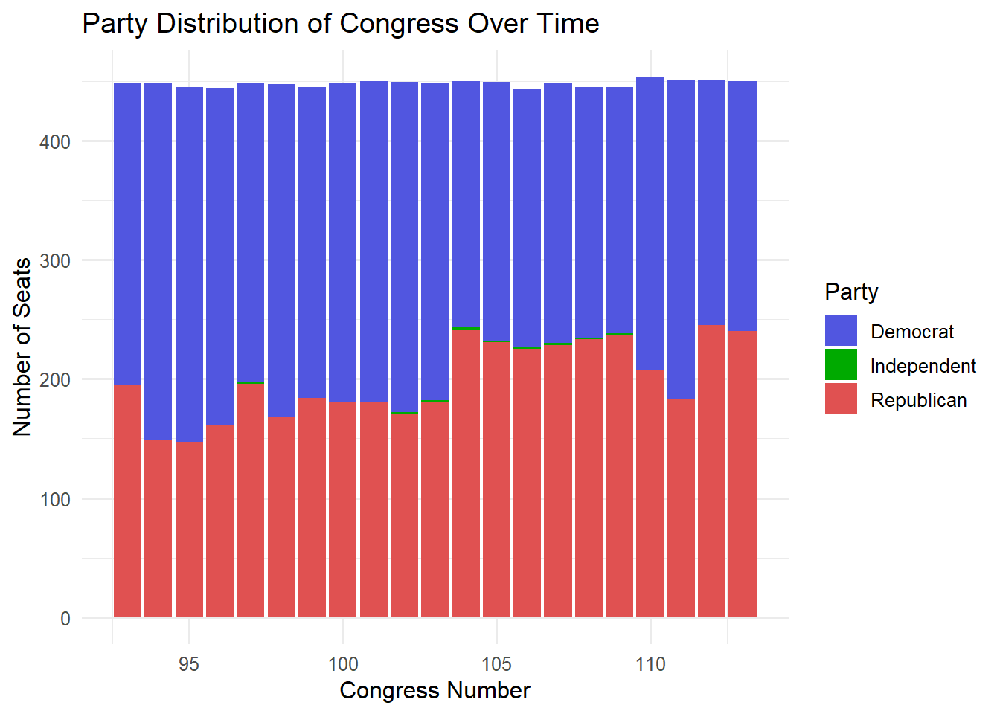
Based on the plot, the party distribution seems to be mostly even, and neither party has had an overall increase or decrease in numbers over the entire dataset.
Next, let’s look at the gender distribution.
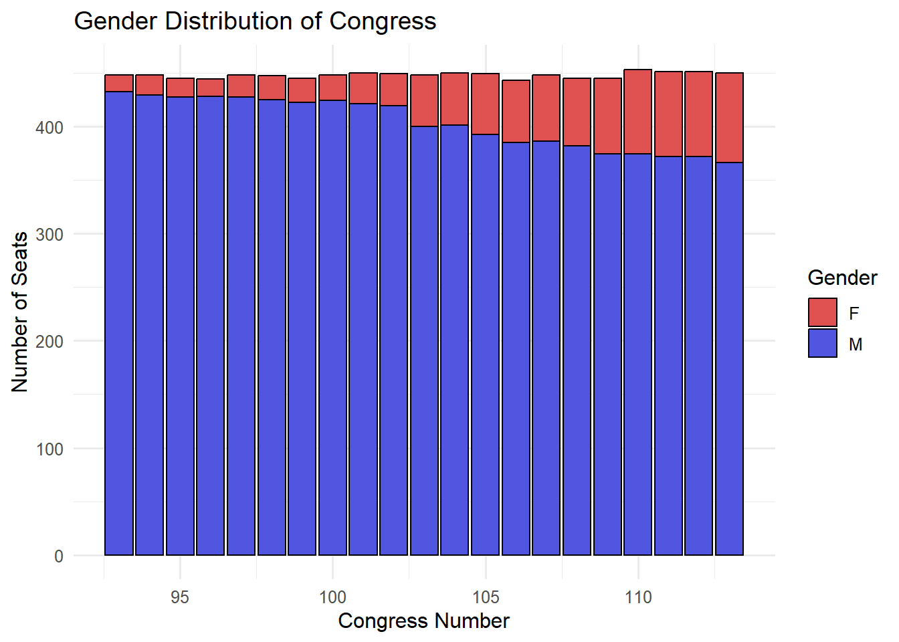
It is clear that congress has always been majority male, but the number of female representatives has certainly increased over time.
Now let’s look at how the age of congress changes over time.
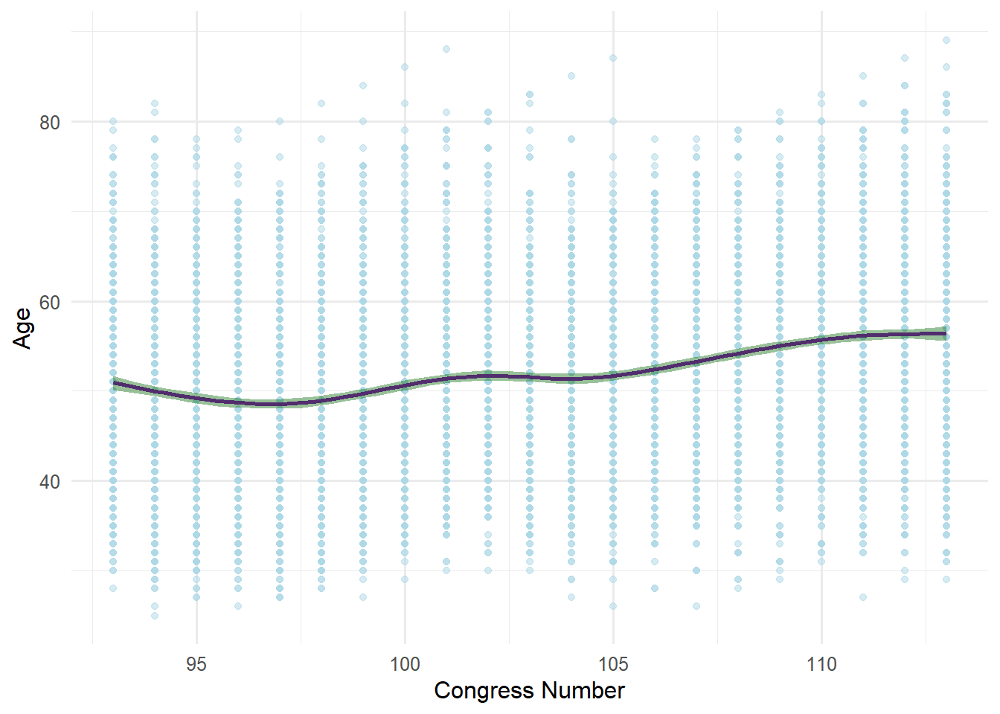
Surprisingly, the average age of congress seems to have gone up slightly over time. This could be because it has become more difficult for younger people to get involved in politics.
Next, let’s look at how the number of terms a senator has served may affect the number of bills they sponsor and/or pass.
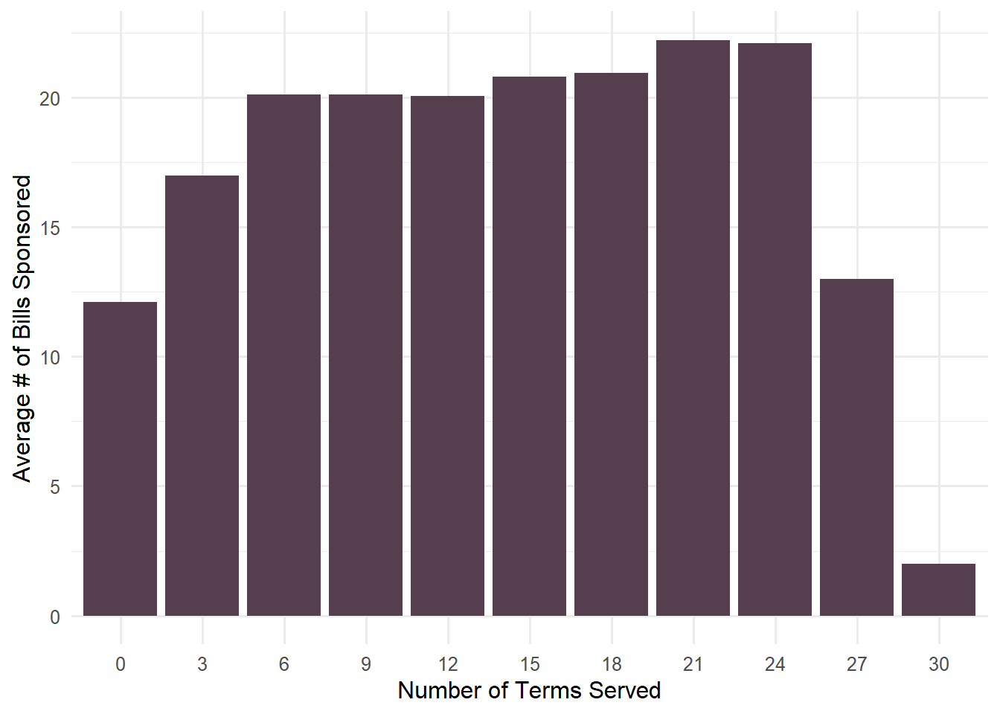
The above graph shows that the number of bills tends to increase by age, but it also seems to decrease as a higher number of terms is reached. This makes sense, since less experienced representatives are less likely to introduce bills. Also, senators with a large number of terms may not sponsor as many bills, since they are reaching the end of their career and their seat in the House is likely easy for them to keep even without introducing new bills.
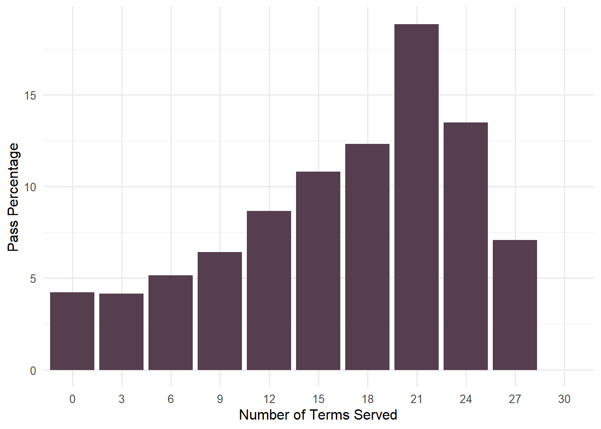
The plot for pass percentage seems to have an increase and decrease similar to the number of bills sponsored. However, it does not seem as obvious why pass percentage would decrease for older representatives.
Now let’s compare these statistics to different age groups.
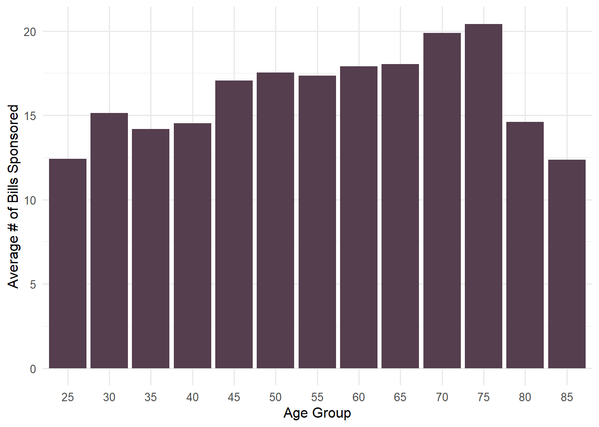
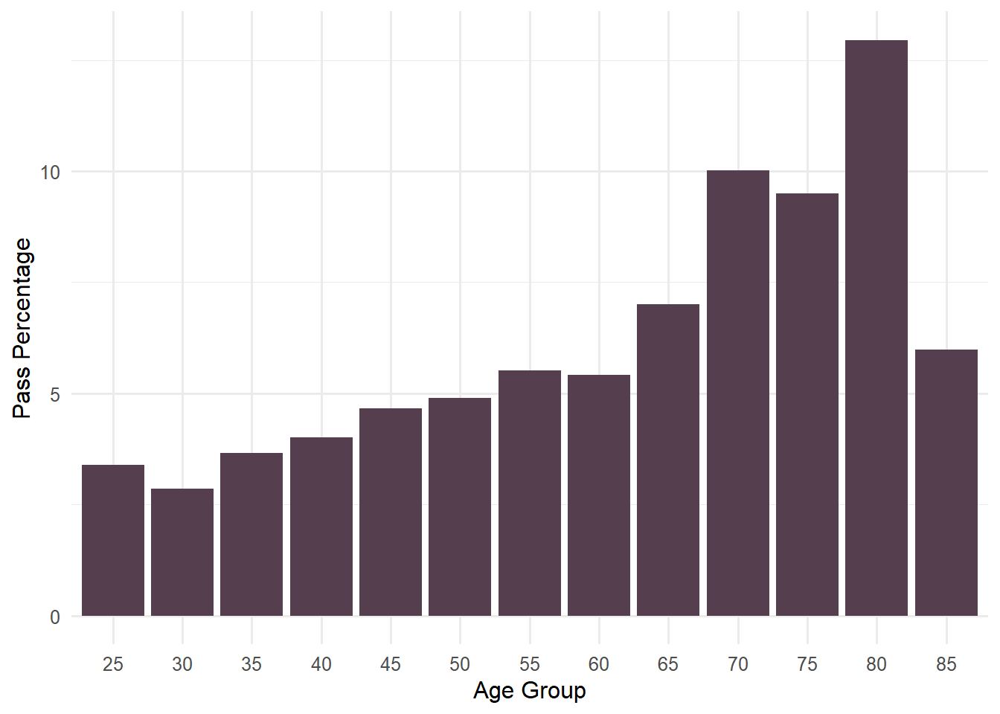
Both of these figures are similar to the figures compared against number of terms, which makes sense since older representatives have most likely served more terms than younger representatives.
Next, let’s look at how gender may affect the number of bills sponsored and pass percentage.
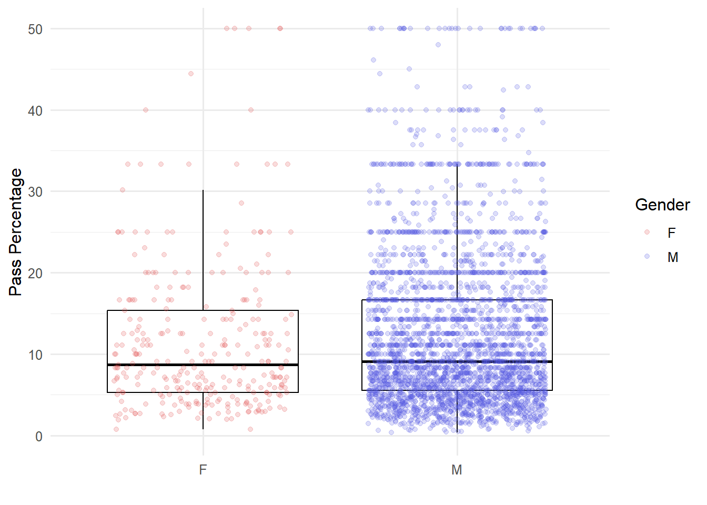
In order to create more defined boxplots, points where the pass percentage is 0 are removed. Additionally, outlier points (where pass percentage is larger than 50%) are included but not displayed.
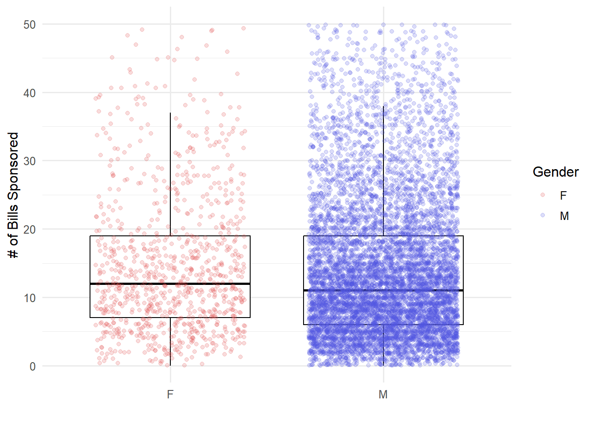
In general, it seems that gender of the representative has very little effect on either of these variables.
To further asses how these variables affect the number of bills and pass percentage, we will create various regression models.
Models
For this data, we will use two different types of models to analyze the affect of personal characteristics on pass percentage and number of bills sponsored. The first we will use is a Generalized Additive Model, a type of regression which shows how well the variables can predict pass percentage and number of bills sponsored for any given representative. Second, we will use bootstrap resampling to better isolate our predictors and see how each causes variance in a representative’s effectiveness.
Model Results
Generalized Additive Models
Number of Bills Sponsored:
| .metric | .estimate |
|---|---|
| rmse | 17.34503 |
| numSpon | .pred |
|---|---|
| 48 | 23.28175 |
| 23 | 23.11442 |
| 31 | 23.08524 |
| 5 | 23.10641 |
| 10 | 23.23670 |
| 23 | 23.14728 |
| 36 | 23.23759 |
| 13 | 23.28175 |
| 9 | 23.46256 |
| 8 | 23.36498 |
It seems the results of this model are not very promising. In the first table, the RMSE value of 17.3 means that our regression model is off by an average of 17.3 bills for each representative it predicted. In the table below it, we can see that the model always seems to guess that the number of bills sponsored is around 23, likely the average number of bills sponsored by each representative.
Pass Percentage:
| .metric | .estimate |
|---|---|
| rmse | 10.90431 |
| passPrcnt | .pred |
|---|---|
| 61.538461 | 13.50058 |
| 1.298701 | 13.47649 |
| 0.000000 | 13.45251 |
| 1.492537 | 13.09492 |
| 10.256410 | 13.00839 |
| 23.076923 | 14.44831 |
| 3.636364 | 13.19889 |
| 0.000000 | 13.19348 |
| 0.000000 | 13.54367 |
| 8.333333 | 13.47649 |
Unfortunately, the GAM model for pass percentage also shares this flaw. the RMSE shows us that the model is off by an average of 10% in predicting the pass percentage of a representative. Also, looking at the first few rows, the model always seems to guess in the range of 13-14 percent.
Bootstrap Estimates
Number of Bills Sponsored:
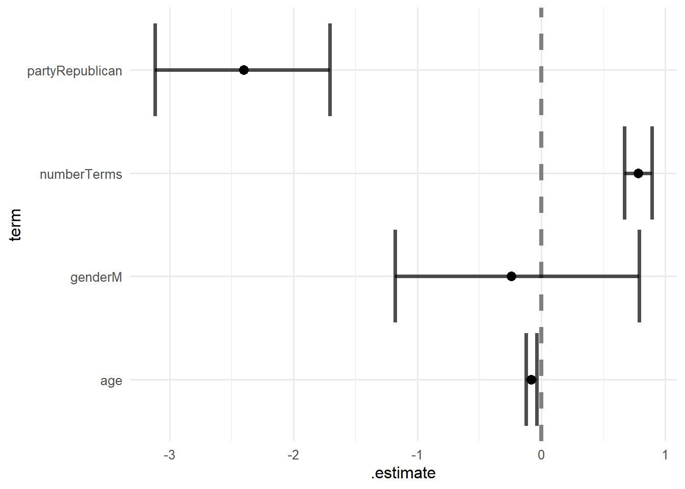
This bootstrap model gives us a better representation of how each variable impacts the number of bills sponsored on average. This model implies that on average, republicans sponsor somewhere from 2-3 bills less than members of other parties. For the number of terms, there seems to be a slight impact, but less than 1 bill more on average does not seem very statistically significant. Similarly, the variance in age is so small that it’s hard to say there is a statistical difference. As for gnder, the margin of error is so high that the model cannot determine for sure whether men or women sponsor more bills on average.
Pass Percentage:
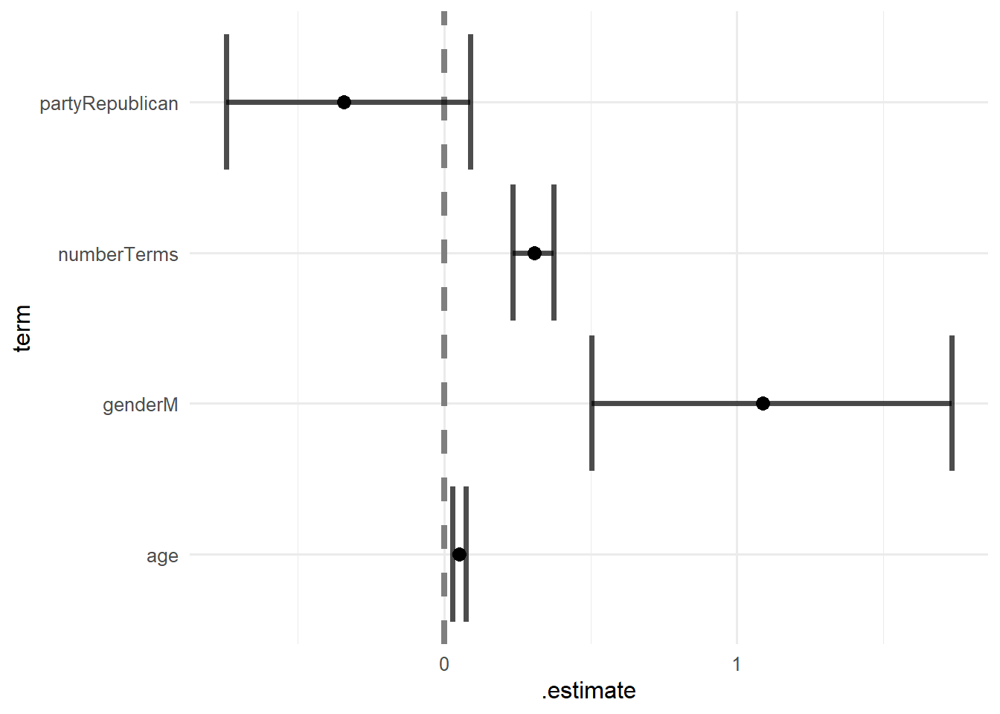
In the bootstrap model for pass percentage, our predictors also do not show much statistical significance. For gender, men seem to pass bills around 1% more of the time, but this does not seem significant. As for the other three predictors, either the difference is too close to 0 or the error bars cross 0, which means the model cannot determine any difference for certain.
Conclusions
This report aims to show how personal characteristics affect the effectiveness of members of the house of representatives. The main predictors used for assessment were the age of the representative, the number of terms served, their gender, and their party. To assess their effectiveness, we analyzed the number of bills sponsored and the pass percentage of a representative’s bills.
After analyzing the previous models, our results are inconclusive. None of the models developed have adequately shown that any of these predictors affect congressional effectiveness. To further improve this model, one would likely need a different measure for congressional effectiveness. There is simply too much variance in the number of bills sponsored and pass percentage. Some representatives may sponsor hundreds of bills, while others only sponsor one of two. Similarly, some representatives may have a 100% pass percentage but only sponsored one bill, or have a really low pass percentage but have sponsored hundreds.
One aspect that was not analyzed was the data on the residents of each district. Perhaps future research could analyze how demographics of specific districts affect the liklihood of that district being effective in congress.
References
Foster-Molina, Ella. 2017. “Historical Congressional Legislation and District Demographics 1972-2014.” Harvard Dataverse. https://doi.org/10.7910/DVN/CI2EPI.